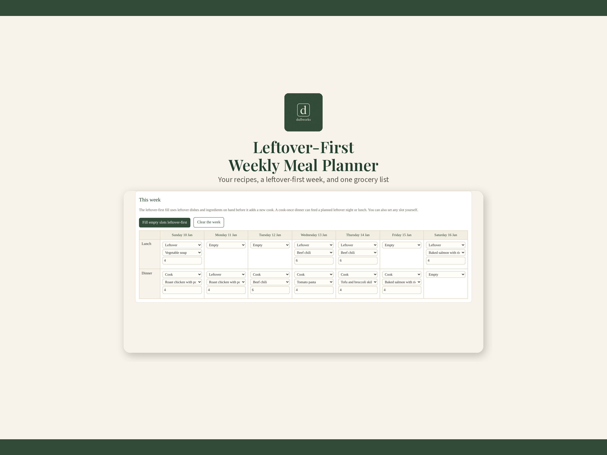
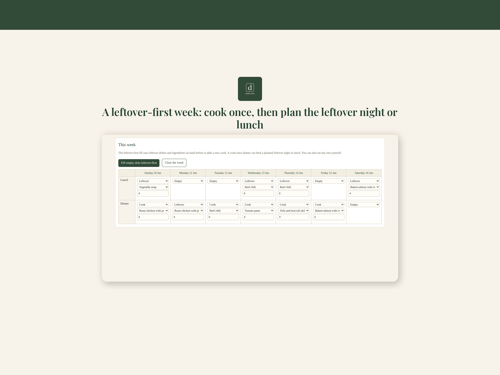
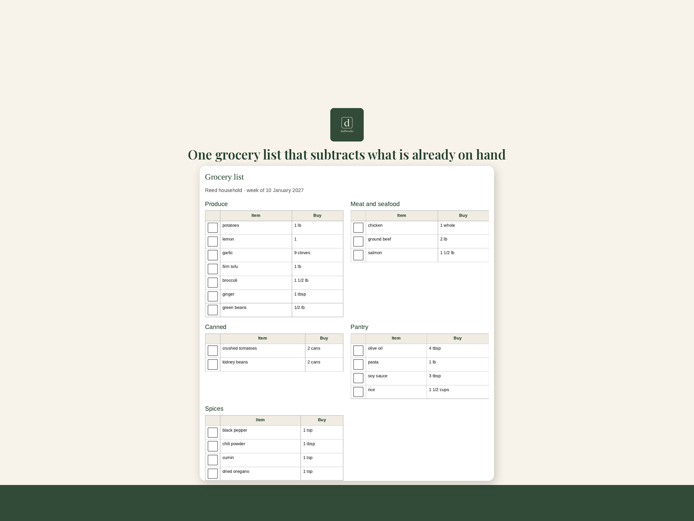

Leftover-First Weekly Meal Planner
Your recipes, a leftover-first week, and one grocery list.

US$12
BuyPlan leftover nights first, then shop for the gaps
A household cook can paste or enter usual dinners, list what is already in the fridge or pantry, and fill a week leftover-first: a cook-once dinner feeds a planned leftover night or lunch, and what is on hand is used before new ingredients. The planner then builds one grocery list, grouped by store section, that subtracts what is already on hand. Print the plan and the list. No account is needed.
What it does
- Paste or type your own recipes, including servings and how many leftover meals a cook can feed.
- List leftover dishes already in the fridge and ingredients already in the house. Keep-by dates are yours to enter.
- Fill empty slots leftover-first, or set any lunch or dinner yourself.
- A cook-once dinner can feed a planned leftover night or lunch later in the week.
- One combined grocery list, grouped by store section, that subtracts what is on hand. Leftover meals do not add to the list, because they reuse a cook.
- Saves in your browser automatically, with no account. Back up and restore with one file. Includes a fictional example week, and a blank start.
- Print the cover, the week plan, the grocery list, the on-hand list and your recipes, on US Letter or A4. You can also download the plan and the list as text files.


What you get
- leftover-first-meal-planner.html, one file that works offline
- A ready-made printable set in US Letter and A4, filled in from the example household: cover, week plan, grocery list, on-hand list and recipes
- A 1-page PDF quick-start guide
Good to know
- Tested in Google Chrome. Other browsers were not tested.
- Print at Actual size or 100%.
- Planning and printing only. It does not tell you what to eat, and it does not give food-safety advice. Follow your own food-safety source for how long to keep leftovers. It helps you plan to use what you already have, and it does not promise a money amount.
- What you enter stays in this browser on this device. Clearing browser data removes it, so keep a backup file.
Price
US$12.
Digital download. All sales are final, no refunds.
Get the Leftover-First Weekly Meal Planner when you are ready to plan the week.